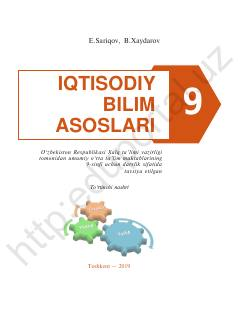

IB9-sinf o‘quvchilari uchun iqtisodiy bilimlar asoslari bo‘yicha o‘quv qo‘llanma.
Ushbu darslik umumiy o‘rta ta’lim maktablarining 9-sinf o‘quvchilari uchun mo‘ljallangan bo‘lib, iqtisodiyotning asosiy tushunchalarini qamrab oladi. Kitobda tadbirkorlik, davlat budjeti, soliq tizimi, iqtisodiy o‘sish va jahon iqtisodiyoti kabi muhim mavzular nazariy va amaliy jihatdan yoritilgan.